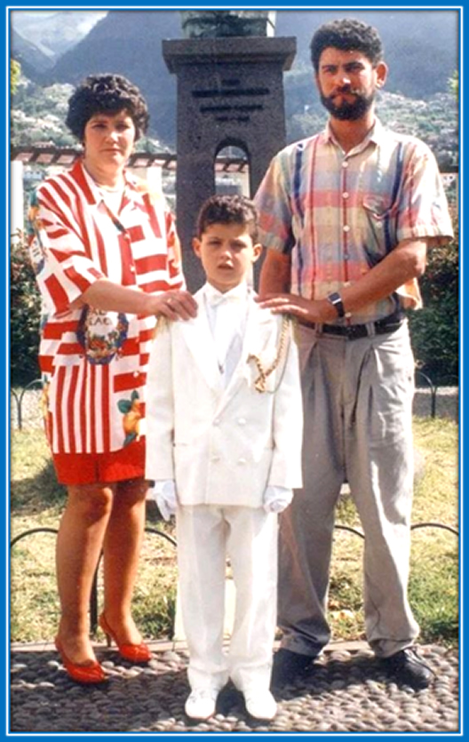

HOME|
About|
Website|
Image|
Contact
About Cristiano Ronaldo
Cristiano Ronaldo, often referred to as CR7, is widely regarded as one of the greatest footballers of all time. Here’s a breakdown of what makes him a GOAT in football:
### Early Life and Career
- **Born**: February 5, 1985, in Funchal, Madeira, Portugal.
- **Youth Career**: Started with Andorinha and later moved to Nacional before joining Sporting CP’s academy.
- **Breakthrough**: At 18, he caught global attention after signing with **Manchester United** in 2003.

### Career Highlights
- **Manchester United (2003–2009)**:
- Won three Premier League titles.
- Captured his first Ballon d'Or in 2008.
- Won the UEFA Champions League in 2008.
- **Real Madrid (2009–2018)**:
- Became Real Madrid’s all-time top scorer with 450 goals in 438 games.
- Won four Champions League titles.
- Claimed four Ballon d'Or awards during his time at Madrid.
- **Juventus (2018–2021)**:
- Won two Serie A titles.
- Became the league’s top scorer in the 2020-21 season.
- **Return to Manchester United (2021–2022)**:
- Continued to break records, including reaching over 800 career goals.
- **Al-Nassr (2023–Present)**:
- Signed a historic contract, raising the profile of Saudi football.
- **Portugal National Team**:
- All-time leading scorer in international football.
- Won the **Euro 2016** and the inaugural **Nations League** in 2019.
### Key Achievements
- **Goals**: Over 850 career goals (club and country).
- **Ballon d'Ors**: 5-time winner.
- **UEFA Champions League**: 5 titles.
- **Records**:
- Most goals in Champions League history.
- First player to win league titles in England, Spain, and Italy.
- Most international goals in history (over 120).
### Playing Style
- Renowned for his athleticism, speed, and incredible work ethic.
- A versatile forward who excels at dribbling, heading, and taking free kicks.
- Known for his iconic "Siii" celebration.
### Legacy
Cristiano Ronaldo is celebrated not only for his remarkable skills and records but also for his relentless drive and dedication to maintaining peak performance over two decades.
Whether through his on-field dominance or his leadership as captain of Portugal, he remains an enduring symbol of excellence.